Risk Factors
Table of Contents
1 Goal
The goal of a risk factor model is to measure, control and possibly neutralize a portfolio's exposure to major sources of risk. 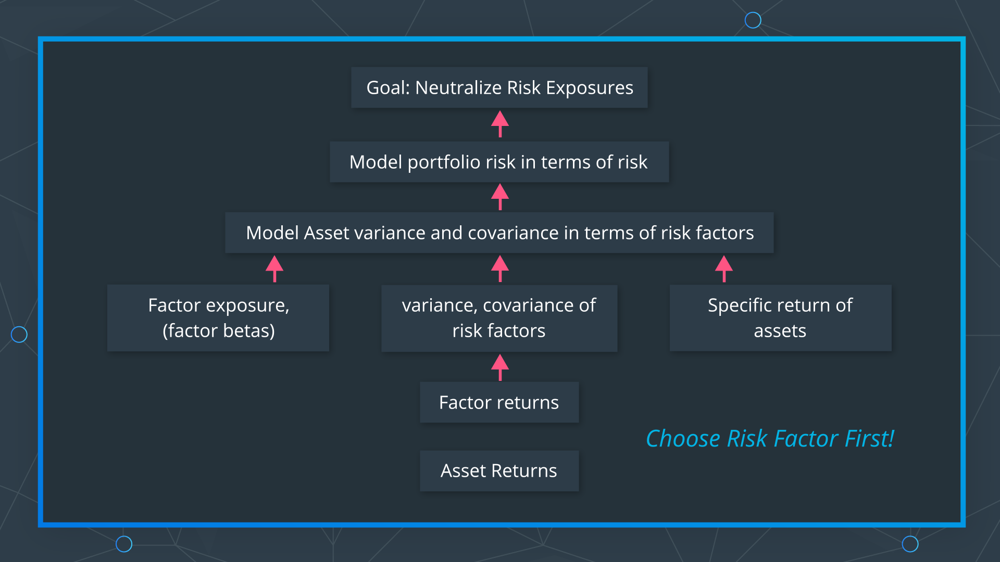
2 Time Series Risk Factor Model
2.1 Steps
- Calculate the factor return and factor covariance matrix.
- Use regression(not settled science) to estimate factor exposure matrix.
- Calculate the time series for the specific return(residual) and its variance matrix (not settled science).
- Calculate the variance of portfolio.
Reference: Lesson 25 1,2,3,4
2.2 Factor Model of Asset Return
- 1 stock, 1 factor
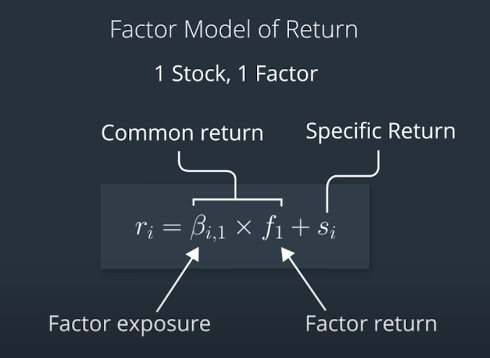
- 1 stock, K factors
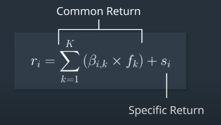
2.3 Factor Model of Portfolio Return
- Factor exposures of each stock to Factor "k" \[\beta_{1,k},\beta_{2,k},...,\beta_{N,k}\]
- Stock weights in portfolio \[x_1,x_2,...,x_N\]
- Factor exposures of portfolio to Factor "k" (so-called Contribution of Factors) \[\beta_{p,k}=(x_1\times\beta_{1,k})+(x_2\times\beta_{2,k})+\cdots+(x_N\times\beta_{\beta_{N,k}})=\sum_{i=1}^N(x_i\times\beta_{i,k})\]
- Modeling portfolio return \[r_p=(\beta_{p,1}\times f_1)+(\beta_{p,2}\times f_2)+\cdots+(\beta_{p,k}\times f_k)+s_p\] \[r_p=\sum_{k=1}^{K}(\beta_{p,k}\times f_k)+\sum_{i=1}^N(x_i\times s_{i})\]
2.4 Variance of One Asset Return
\[\begin{align*} Var(r_i) & = Var(\beta_{i,1}f_1 + \beta_{i,2}f_2+s_i) \\ & = Var(\beta_{i,1}f_1) + Var(\beta_{i,2}f_2) + 2Cov(\beta_{i,1}f_1, \beta_{i,2}f_2) + Var(s_i) \\ & = \beta_{i,1}^2 Var(f_1) + \beta_{i,2}^2 Var(f_2) + 2\beta_{i,1}\beta_{i,2}Cov(f_1, f_2) + Var(s_i) \end{align*}\]
- Systematic Variance: \(\beta_{i,1}^2 Var(f_1) + \beta_{i,2}^2 Var(f_2) + 2\beta_{i,1}\beta_{i,2}Cov(f_1, f_2)\)
- Specific Variance: \(Var(s_i)\)
2.5 Variance of Two Asset Return
- \(Cov(r_i, r_j)\) \[\begin{align*} Cov(r_i, r_j) & = Cov(\beta_{i,1}f_1 + \beta_{i,2}f_2+s_i, \beta_{j,1}f_1 + \beta_{j,2}f_2 + s_j) \\ & = \beta_{i,1}\beta_{j,1}Var(f_1) + \beta_{i,1}\beta_{j,2}Cov(f_1, f_2) + \beta_{i,2}\beta_{j,1}Cov(f_1, f_2) + \beta_{i,2}\beta_{j,2}Var(f_2) \end{align*}\] 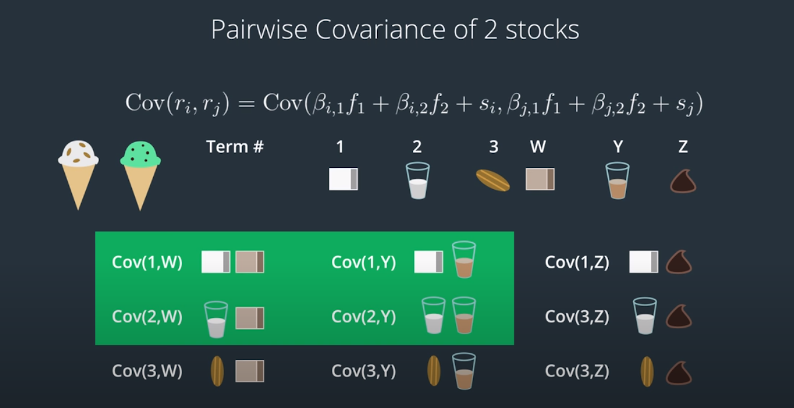
- Covariance Matrix of Assets \[\begin{pmatrix} Var(r_i) & Cov(r_i, r_j) \\ Cov(r_i, r_j) & Var(r_j) \end{pmatrix}\]
2.6 Factor Model of Portfolio Variance
\[Var(r_p)=x_i^2 Var(r_i) + x_j^2 Var(r_j) + 2x_i x_j Cov(r_i, j_i)\] 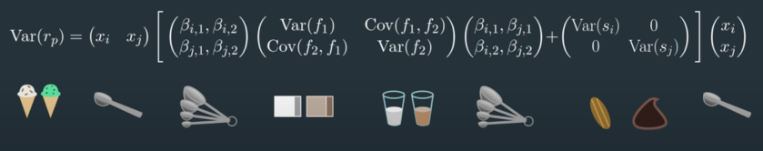 \[Var(r_p)=\boldsymbol{X^T(BFB^T+S)X}\] 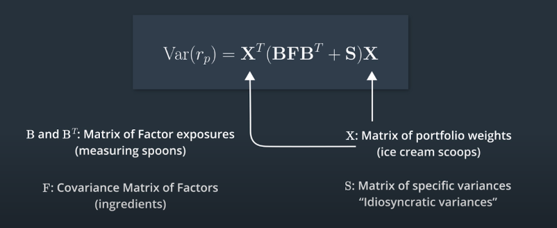
3 Cross-Sectional Risk Model
A cross-section means that we use multiple stocks for a single time period in a calculation. A cross-sectional model calculates the factor exposure first, and then uses that information to estimate the factor return. \[r_i=\beta_{i,k}\times f_k + c_i\] \[Var(r_p)=\boldsymbol{X^T(BFB^T+S)X}\]
3.1 Example
Uses Fundamental Factors: value factor and size factor (3 factors fama french model)
Steps
- Factor exposures \(\beta_{i,v}, \beta_{i,s}\)
- Stock returns \(r_i\)
- Estimate factor returns \(f_{v,t}, f_{s,t}\) using regression.
- Repeat to get time series \(f_v, f_s\) for each day.
- Calculate \(Var(f_v)\), \(Var(f_s)\), \(Cov(f_v, f_s)\)
- Specific returns \(s_i\)
3.2 Cross-Sectional Factors
Categorical Factors
Country, Sector, etc.
Fundamental Factors
4 PCA Risk Model(Statistic Risk Model)
Machine Learning Approach: Principle Components Analysis(PCA).
PCA can be used to represent the data set in terms of hidden latent features or dimensions, and potentially reduce the number of dimensions by dropping the least informative dimensions.
PCA is a series of calculations that gives us a new and special bases in such a way that the projections are as spread out as possible or have maximum variance. The first new axis minimizes "reconstruction error"(perpendicular distance of each coordinate to the axis). The second axis must be perpendicular or orthogonal to the first. (also have to maximum variance in higher-dimensional space). Core idea
4.1 Goal
Dimensionality Reduction
4.2 Translating Between Bases
Example:
- origin bases (1, 0), (0, 1)
- vector on origin coordinate (1, 2)
- new bases on origin coordinate \(\hat{i}=(1, 1/2)\), \(\hat{j}=(-1, 1)\)
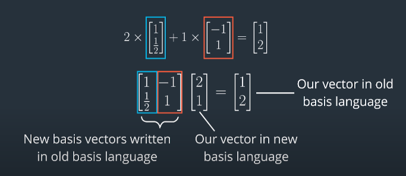
4.3 Steps
- Mean centering: make data points centered around zero. (mean centering/mean normalizing)
Principal Components (PC): new bases written in the language of the old bases
- Hint: dot product formula: \(\vec{x}\cdot \hat{w}=x\cos \theta w\)
- x and w are the length of \(\vec{x}\) and \(\hat{w}\)
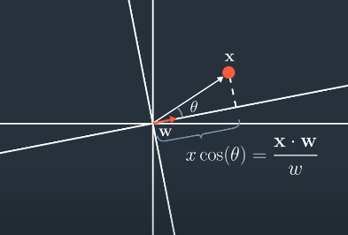
- Hint: dot product formula: \(\vec{x}\cdot \hat{w}=x\cos \theta w\)
Pick new bases(i.e. Principal Components): maximize variance \(\frac{1}{n-1}\sum_i (\frac{\boldsymbol{x_i\cdot w}}{w})^2\)
- Condensed Form: \(\frac{1}{n-1}\left \| \frac{1}{w} \mathbf{Xw} \right \|_2\)
- \(\mathbf{X}\): the columns are the features or dimensions
- Another Form: \(\frac{1}{n-1}\frac{(\mathbf{Xw})^T(\mathbf{Xw})}{w^2}\)
- A Rayleigh Quotient: \(\frac{1}{n-1}\frac{\mathbf{w^T X^T Xw}}{\mathbf{w^T w}}\) <- to maximize
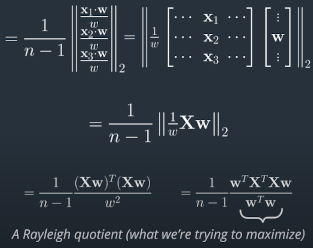
- Condensed Form: \(\frac{1}{n-1}\left \| \frac{1}{w} \mathbf{Xw} \right \|_2\)
4.4 Explains
5 Types of Risk Models
- Time Series Risk Model
- Capital Asset Pricing Model(single factor)
- Fama French 3 Factor Model(multifactor)
- Cross-Sectional Risk Model
- PCA Risk Model
5.1 CAPM model
- Single Factor: \(f_m=r_m-r_f\)
- Linear Regression Model: \(r_i-r_f=\beta_{i,1}(r_m-r_f)+c_i\)
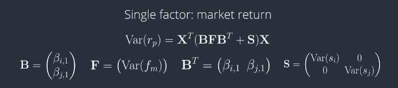
5.2 Fama French Model
- 3 Factors: \(f_m\) market, \(f_s\) size, \(f_v\) value
Size Factor(SMB)
- Hypothesis: small-cap stocks tend to have higher returns
- create a theoretical portfolio: long small-cap and short large-cap
- the return of the portfolio is the return of the size factor
- SMB: Small Minus Big
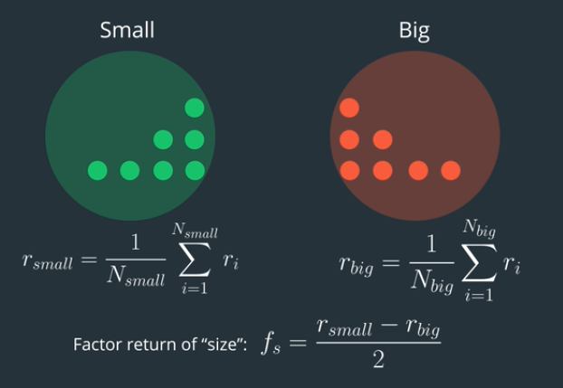
Value Factor(HML)
- Hypothesis: stocks that have high book value relative to their market price tend to perform well.
- Value Stocks: higher book value/market value.
- Growth Stocks: lower book value/market value
- create a theoretical portfolio: long value stocks and short growth stocks
- HML: High Minus Low
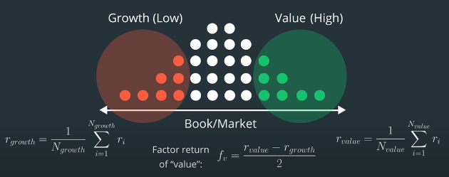
3 Factor Model
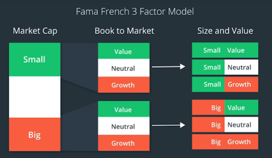 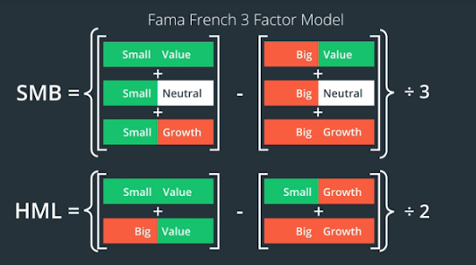
- \(f_m=r_m-r_f\)
- \(f_s=\frac{1}{3}((r_{s,v}+r_{s,n}+r_{s,g}) - (r_{b,v}+r_{b,n}+r_{b,g}))\)
- \(f_v=\frac{1}{2}((r_{s,v}+r_{b,v}) - (r_{s,g}+r_{b,g}))\)
\[F=\begin{pmatrix} Var(f_m) & Cov(f_m, f_s) & Cov(f_m, f_v) \\ Cov(f_s,f_m) & Var(f_s) & Cov(f_s, f_v) \\ Cov(f_v,f_m) & Cov(f_v, f_s) & Var(f_v) \end{pmatrix}\] \[B=\begin{pmatrix} \beta_{i,m} & \beta_{i,s} & \beta_{i,v} \\ \beta_{j,m} & \beta_{j,s} & \beta_{j,v} \end{pmatrix}\]
- Use multiple regression to estimate factor exposures.
\[r_i=(\beta_{i,m}\times f_m) + (\beta_{i,s}\times f_s) + (\beta_{i,v}\times f_v)\] \[r_j=(\beta_{j,m}\times f_m) + (\beta_{j,s}\times f_s) + (\beta_{j,v}\times f_v)\] \[S=\begin{pmatrix} Var(s_i) & 0 \\ 0 & Var(s_j) \end{pmatrix}\] \[s_i=r_{i,actual}-r_{i,estimated}\] \[s_j=r_{j,actual}-r_{j,estimated}\]